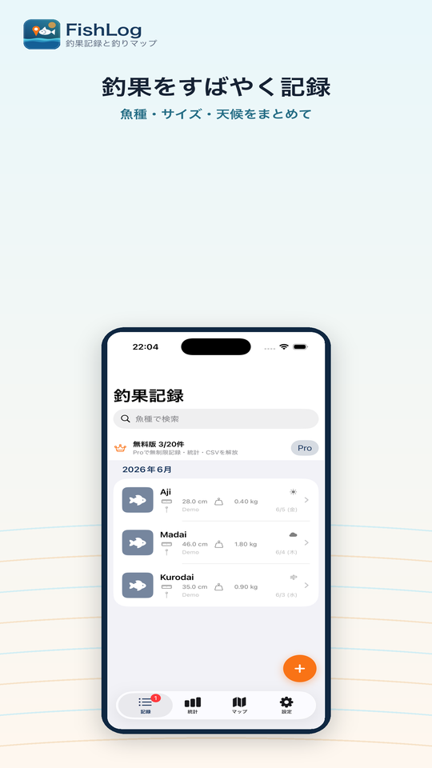
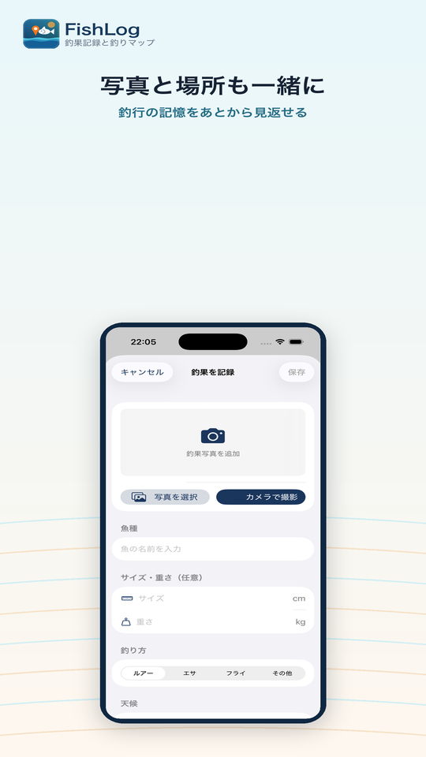
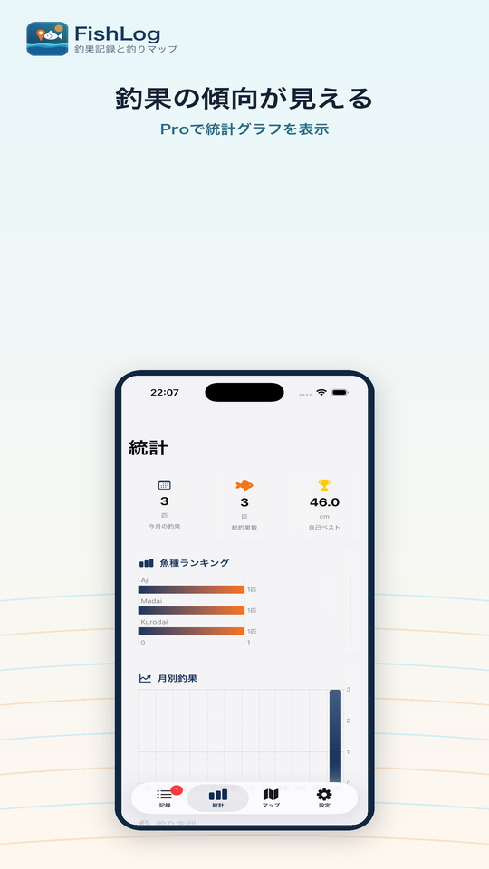
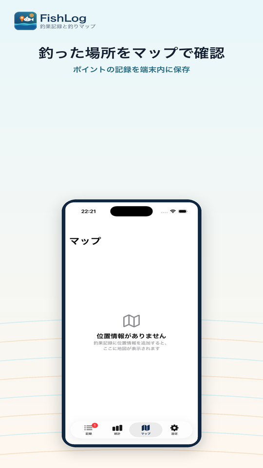
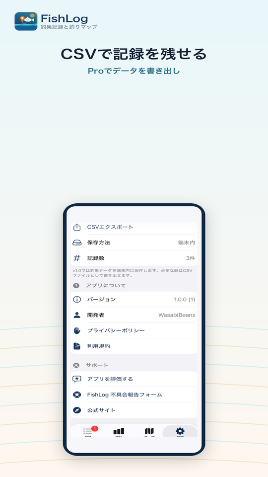

What You Can Do
次の釣りに活きる記録を、短い入力で。
釣った魚を写真だけで終わらせず、サイズ、天候、釣り方、場所と一緒に残します。見返すほど、よく釣れた条件やお気に入りのポイントが分かりやすくなります。
釣果をすばやく登録
魚種、サイズ、重さ、釣り方、天候、日時、メモを1つのフォームで記録できます。
写真と位置情報
釣果写真を添付し、現在地を使って釣った場所も残せます。位置情報はユーザー操作時だけ取得します。
統計とCSV出力
FishLog Proでは、魚種ランキングや月別釣果を見返し、CSVでデータを書き出せます。
Screens
釣果を記録して、あとから見返しやすく。
一覧、写真付き記録、統計、マップ、CSV出力まで、釣行の記憶を整理しやすい画面にまとめています。

釣果をすばやく記録
写真と場所も一緒に
釣果の傾向を確認
釣った場所を見返す
ProでCSV書き出しLocal Records
釣果データは端末内に保存。Proで広告非表示。
釣果データ、写真、位置情報は端末内に保存されます。無料版では広告が表示される場合があります。FishLog Proの購入はAppleのApp Store決済で扱います。
FishLogはApp Storeで公開中です。アプリの入手や詳細確認は「App Storeで見る」から進めます。